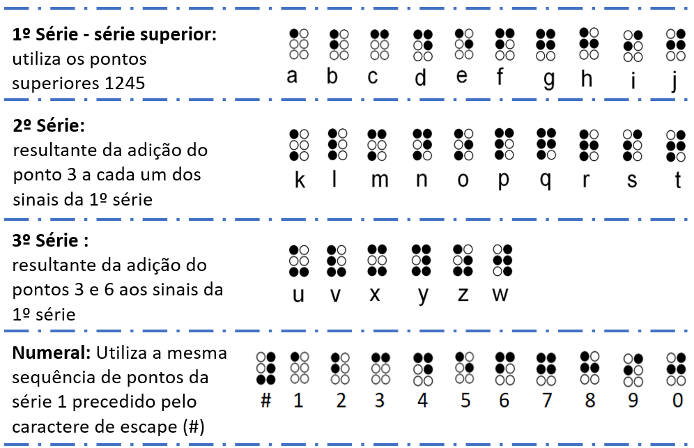

Sistema Braille
Criado na França, em 1825, por Louis Braille, o Sistema Braille de leitura tátil e escrita para cegos, tornou-se indispensável para o ensino-aprendizagem na formação dos Deficientes Visuais.
O Braille baseia-se na combinação de 63 pontos, dispostos em forma de matriz 3x2, com seis pontos básicos, organizados espacialmente em duas colunas verticais com três pontos à direita e três à esquerda de uma cela básica denominada Cela Braille.
O Braille possui formação de letras e números, de forma que a combinação única dos pontos representam caracteres diferentes, sendo assim, possui as seguintes regras de disposição dos sinais:
-
A 1ª série - denominada de série superior - Utiliza os 4 pontos superiores, 1245, para as letras de 𝑎 até 𝑗 ;
-
A 2ª série é resultante da adição do ponto 3 a cada um dos sinais da 1ª série, ou seja, faz uso da mesma sequência de pontos das primeiras letras, mas agora agregando o ponto 3 para representar as próximas 10 letras de 𝑘 até 𝑡 ;
-
Em seguida, agregou os pontos 3 e 6 aos sinais da 1ª série para as letras 𝑢 até 𝑧 , com a exceção do 𝑤 , pois não existia na Língua Francesa naquela época;
-
O sistema utiliza a noção de caracteres de escape, em que os códigos mudam de sentido quando precedidos por outros, como é o caso dos números de 1, 2, ..., 8, 9 e 0 que utilizam a mesma sequência de pontos da 1ª série, mas associado com o símbolo de numeral em Braille , como mostra a Figura 1.

Figura 1: Sinais Básicos do Sistema Braille
Avançar